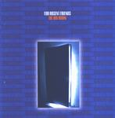

| Artist: | For Absent Friends |
| Title: | The Big Room |
| Label: | Red Sea Records RED3007 |
| Length(s): | 46 minutes |
| Year(s) of release: | 2001 |
| Month of review: | [01/2001] |
| 1) | We Can Not... | 4.29 |
| 2) | Silly Love Song | 4.35 |
| 3) | Giving Up | 3.46 |
| 4) | Cameroon | 4.21 |
| 5) | The Big Room | 7.30 |
| 6) | If Love | 4.04 |
| 7) | Little Things | 3.55 |
| 8) | Higher Level | 4.02 |
| 9) | Don't Hurt Me | 5.13 |
| 10) | The One | 4.32 |
Silly Love Song opens with piano and acoustic guitar. I've said it before: FAF is a melodic rock band. This already showed on the previous track and this track is one of their poignant ballads. Melodic, quite accessible, to the point, but also effective. Giving Up is another strong song about love with forceful guitars played in strumming fashion. Again, the vocal melodies are good, and they make or break the song (for the most part).
One might compare the style of FAF with Genesis during Calling All Stations, an album which I also happen to like a lot (much more than We Can't Dance). On Cameroon we find typically FAF melodies, but I am not that fond of the melody of the chorus (The "I Know...." part). Some of the meanders in the melody remind me of Hogarth era Marillion (their pop tracks). The least likable track so far.
The title track is with seven and a half minute by far the longest on this album. The song opens percussively with slow dark percussion and what seems to be longstretched keyboard effects and a varied guitar sound. The song is rather atmospheric. Later on the song becomes quite a bit more active, with Roes playing a mean guitar. In a way, I think Van Lint puts the same emotionality into his singing as for instance does Marillion. Although the music is not similar, their is a similarity in form. The band rocks away during the final part with a leading role for Roes.
After a crescendo such as this it is time for a step back. A piano ballad is up next. A great melody this is "lighters on" music. The band does not bring anything new besides new songs, but I do not think that that is what they are after. The emotional content of the song is high. Melodramatic, but like most of what I have heard, it is very effective and sound honest enough.
Acoustic guitar opens Little Things. This song has a bit of a Mr. Mister feel at first, but later turns becomes more FAF again. The chorus is again one a catchy one, but does not work as well as earlier. The keyboards in the opening Higher Level sound very familiar (who can tell me where they are from? Twelfth Night's Creepshow maybe?). The song has a low pace and nothing much happens. Later on the song becomes more funky/jumpy with quite a bit of organ brimming. Not one my favourites, though.
Don't Hurt Me opens like a blues track. The song is rather off-beat with both repetitive and soloing acoustic guitar in combination later with a rhythm guitar. The drumming is rather loose. Melodically it is not so interesting. This one might do well in a bar or something, especially with the skatting at the end.
The final track is The One, a track known from the Decade double compilation. The track is similar in style to the opener: a quiet, good melodic verse alternated with an optimistic chorus.